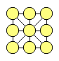
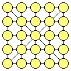
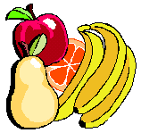
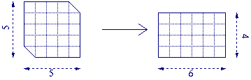
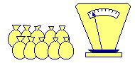
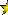
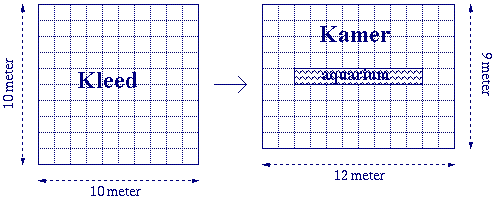
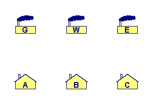
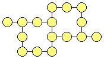

Klik hier om onze sponsor te bezoeken!
De puzzels zijn gemarkeerd met sterren ( ) die de moeilijkheidsgraad van de betreffende puzzle aangeven.
) die de moeilijkheidsgraad van de betreffende puzzle aangeven.
![[TERUG]](left.gif) terug naar de hoofd-puzzelpagina.
terug naar de hoofd-puzzelpagina.


i.
Cijfer Vierkant ![[Nieuw!]](nieuw.gif)
De cijfers 1 tot en met 9 moeten in
het vierkant worden geplaatst (zie plaatje). Hierbij moet
de som van de cijfers op elke rij, kolom, en diagonaal
gelijk zijn.
De Vraag:
Hoe kunnen de cijfers in
het vierkant worden geplaatst?
Het Antwoord:
 Klik hier!...
Klik hier!...
Nog een Vraag:
De cijfers 1 tot en met 16 moeten in de cirkels van het vierkant hieronder geplaatst
worden, zodanig dat de som van de cijfers op elke rij, kolom, en diagonaal 34 is.
Hoe moeten de cijfers in het vierkant geplaatst worden?

Nog een Antwoord:
Klik hier!...
En nog een Vraag:
De cijfers 1 tot en met 25 moeten in de cirkels van het vierkant hieronder geplaatst
worden, zodanig dat de som van de cijfers op elke rij, kolom, en diagonaal 65 is.
Hoe moeten de cijfers in het vierkant geplaatst worden?

En nog een Antwoord:
Klik hier!...
![[OMHOOG]](back.gif) terug naar de index
terug naar de index

ii.
Vier Vruchten
In een wedstrijd zijn vier vruchten (een appel, een banaan, een sinaasappel, en een peer)
in vier gesloten dozen gelegd (&eactue;én vrucht per doos).
Mensen mogen raden welke vrucht er in welke doos zit.
123 mensen doen mee. Als de dozen geopend worden, blijken 43 mensen geen van
de vruchten correct geraden te hebben, 39 mensen hebben &eactue;én vrucht correct geraden,
en 31 mensen hebben twee vruchten correct geraden.
De Vraag:
Hoeveel mensen hebben drie vruchten correct geraden, en hoeveel hebben er vier vruchten correct geraden?
Het Antwoord:
Klik hier!...
terug naar de index
iii.
Het Laatste Woord
Generaal Gasselveld, beschuldigd van hoogverraad, wordt door de militaire
rechtbank ter dood veroordeeld. Hij mag nog één
laatste uitspraak
doen, waarna hij zal worden doodgeschoten als
die uitspraak niet waar is, en worden opgehangen als die uitspraak wel
waar is. Gasselveld spreekt en wordt vrijgelaten.
De Vraag:
Wat kan hij gezegd hebben?
Het Antwoord:
Klik hier!...
terug naar de index
iv.
Drie Wijze Woorden
Heel, heel lang geleden dongen eens twee Egyptische
kamelendrijvers naar de hand van de dochter van de sjeik van Abbudzjabbu.
De sjeik, die geen van beide mannen zag zitten als toekomstige echtgenoot
voor zijn dochter, bedacht een slim plan: een wedstrijd zou bepalen wie van
hen met zijn dochter mocht trouwen. En aldus organiseerde de sjeik een
kamelenrace. Beide kamelendrijvers moesten per kameel reizen van Cairo naar
Abbudzjabbu en degene wiens kameel als laatste in Abbudzjabbu zou
aankomen, mocht met de sjeiksdochter in het huwelijksbootje stappen.
De twee kamelendrijvers, die beseften dat dit wel eens heel erg lang kon gaan
duren, besloten ten einde raad de Wijze van hun dorp te raadplegen. Daar
aangekomen legden zij de situatie uit, waarop de Wijze van het Dorp zijn
wichelroede omhoog stak en 3 wijze woorden sprak. Opgelucht verlieten de
twee kamelendrijvers zijn hut: ze waren klaar voor de strijd!
De Vraag:
Welke 3 wijze woorden sprak de Wijze van het dorp?
Het Antwoord:
Klik hier!...
terug naar de index
v.
Papier Partitioneren
Een stuk papier ter grootte 5 bij 5, met twee afgestompte
hoeken, moet in twee stukken worden geknipt (dus in het totaal één keer knippen)
en vervolgens weer zodanig aan elkaar gelegd worden dat een rechthoek ter
grootte van 6 bij 4 ontstaat (zie onderstaand figuur).

De Vraag:
Hoe moet het papiertje worden doorgeknipt?
Het Antwoord:
Klik hier!...
terug naar de index
vi.
Gespiegelde Klok
Een jongen vertrekt 's morgens naar school.
Op het moment dat hij het huis verlaat kijkt hij via de spiegel op de klok.
De klok heeft geen cijfers die de uren aangeven en de jongen vergist zich
daarom bij het interpreteren van de tijd (hij vergeet er rekening mee te houden
dat hij het spiegelbeeld van de klok ziet). Hij gaat er maar van uit dat de klok
kapot is en fietst naar school, waar hij na twintig minuten aankomt.
Op dat moment geeft de schoolklok een tijd aan die twee en een half uur
later is dan de tijd die de jongen dacht te zien op de klok bij hem thuis.
De Vraag:
Hoe laat kwam de jongen op school aan?
Het Antwoord:
Klik hier!...
terug naar de index

vii.
De Driehoek
De cijfers 1, 2, 3, 4, 5, 6, 7, 8, en 9 moeten op
de bovenstaande driehoek worden geplaatst. Dat moet op zo'n manier
gebeuren dat de som van de cijfers op elke zijde van de driehoek gelijk is.
De Vraag:
Hoe moeten de nummers worden
gerangschikt?
Het Antwoord:
Klik hier!...
terug naar de index
viii.
Verschijnend Vierkantje
De twee onderstaande figuren zijn opgebouwd uit vier delen.
De delen met dezelfde kleur hebben exact dezelfde vorm en grootte! De onderdelen
zijn slechts anders gerangschikt in de twee figuren, waardoor in het onderste
figuur een vierkantje verschijnt, aangeduid met het vraagteken ('?').

De Vraag:
Waar komt het verschijnende
vierkantje vandaan?
Het Antwoord:
Klik hier!...
terug naar de index

ix.
Knikkers Keuren
Voor je liggen 10 zakken met knikkers. De
aantallen per zak verschillen, maar alle zakken bevatten meer
dan tien knikkers. In negen zakken zitten alleen knikkers van 10 gram.
In één zak zitten echter alleen knikkers van 9 gram. Je hebt verder
één weegschaal tot je beschikking en je mag maar één
keer wegen.
De Vraag:
Hoe kom je er achter in welke zak
alleen knikkers van 9 gram zitten, terwijl je maar 1 keer mag wegen?
Het Antwoord:
Klik hier!...
terug naar de index

x.
Nummer Netwerk
De nummers 1 tot en met 8 moeten in de cirkels van het
netwerk (zie figuur) worden geplaatst. Nummers in aangrenzende cirkels (verbonden
door een lijn) moeten daarbij meer dan 1 verschillen. Dus bijvoorbeeld
cirkels die verbonden zijn met de cirkel waar 4 in staat mogen niet de
waarde 3 of 5 bevatten.
De Vraag:
Hoe moeten de nummers in de cirkels
van het netwerk worden geplaatst?
Het Antwoord:
Klik hier!...
terug naar de index

xi.
Negen Punten
Negen punten zijn geplaatst in drie rijen
van drie, zoals te zien is in het plaatje. Deze negen punten
moeten verbonden worden door vier rechte lijnen die op elkaar
aansluiten (dus vier verbonden rechte lijnen waarbij tussendoor
'de pen niet van het papier' mag komen).
De Vraag:
Hoe moeten de vier lijnen worden getrokken?
Het Antwoord:
Klik hier!...
terug naar de index
xii.
Getallen Ster
Gegeven de volgende figuur:

De getallen 16, 18, 20, 22, 24, 26, 28, 28, 32 en 36 moeten in de rondjes
van het figuur ingevuld worden, zodanig dat er op elke lijn een som van exact 100 ontstaat.
De Vraag:
Hoe moet dit?
Het Antwoord:
Klik hier!...
terug naar de index
xiii.
Ongewone Optelling 
In de optelsom hieronder staat elk van de letters A, B, C, D, en E
voor een van de cijfers 1 tot en met 5 (dezelfde letter staat voor hetzelfde cijfer,
en verschillende letters staan voor verschillende cijfers).
Zowel het eerste als het laatste cijfer van de som is reeds ingevuld.
ABCDE
DABEC
EAABC
ACDAE
----- +
9CBA0
De Vraag:
Hoe ziet de volledige optelsom er in cijfers uit?
Het Antwoord:
Klik hier!...
Nog een Vraag:
In de onderstaande optelsom zijn alle cijfers vervangen door letters.
Dezelfde letter staat voor hetzelfde cijfer, en verschillende letters staan voor verschillende cijfers.
ABCABA
BBDCAA
ABEABB
ABDBAA
------- +
AAFGBDH
Hoe ziet de optelsom er in cijfers uit?
Nog een Antwoord:
Klik hier!...
terug naar de index
xiv.
Kopzorgen over Koeien
Een oude boer overleed en liet 17 koeien na aan zijn drie zonen.
In zijn testament schreef de boer dat zijn oudste zoon de helft,
zijn middelste zoon 1/3, en zijn jongste zoon
1/9 van de koeien moest krijgen.
De zonen, die niet met halve koeien wilden blijven zitten,
probeerden dagenlang te bedenken hoeveel koeien ieder van hen
moest krijgen.
Op een dag kwam hun buurman voorbij om te kijken hoe de jongens het
deden na hun vaders dood. De drie vertelden hem over hun probleem.
Na een tijdje nagedacht te hebben, zei de buurman:
"Ik ben zo terug!"
Hij ging weg, en toen hij terugkwam, konden de drie zonen de koeien
verdelen volgens de wens van hun vader, en wel zo dat elk van hen een
geheel aantal koeien kreeg.
De Vraag:
Wat was de oplossing van de buurman?
Het Antwoord:
Klik hier!...
terug naar de index
xv.
Kleed Knippen
Een vloerkleed ter grootte 10 bij 10 meter moet
in een kamer komen te liggen met een afmeting van 12 bij 9 meter.
In het midden van de kamer staat een aquarium ter grootte van 8 bij 1 meter
(zie onderstaand figuur). Het vloerkleed mag in niet meer dan twee stukken
worden geknipt (dus één keer knippen).

De Vraag:
Hoe moet het voerkleed worden geknipt
zodat het in de kamer om het aquarium past?
Het Antwoord:
Klik hier!...
terug naar de index
xvi.
Altijd & Nooit
Het is altijd 1 tot 6,
het is altijd 15 tot 20,
het is altijd 5,
maar het is nooit 21,
tenzij het vliegt.
De Vraag:
Wat is dit?
Het Antwoord:
Klik hier!...
terug naar de index
xvii.
Magisch Vierkant
Gegeven het volgende magische vierkant:
Vul dit magische vierkant verder in, zodanig dat de optelsom van de getallen in elke rij (horizontaal, verticaal en diagonaal)
steeds 264 is, ook als je het vierkant op z'n kop houdt.
Je mag uitsluitend de cijfers 1, 6, 8 en 9 gebruiken, en elk getal dat je invult mag slechts éénmaal in het vierkant voorkomen.
De Vraag:
Hoe moet dit gedaan worden?
Het Antwoord:
Klik hier!...
terug naar de index
xviii.
Schilderij Ophangen
Je hebt een schilderij met een touw eraan.
Het touw zit vast aan de twee bovenste hoeken van het schilderij.
In de muur zitten twee spijkers, horizontaal naast elkaar.
De vraag is nu om het touw zodanig aan
de spijkers te hangen dat het schilderij naar beneden valt indien
(willekeurig) één van de twee spijkers uit
de muur wordt getrokken.
Het schilderij moet onder de spijkers hangen en moet aan het touw
hangen.
De Vraag:
Hoe moet het schilderij opgehangen worden?
Het Antwoord:
Klik hier!...
terug naar de index

xix.
Gas, Water & Electriciteit
Er zijn drie huizen (A, B en C) en drie voorzieningen
(gas (G), water (W) en electriciteit (E)).
Elk huis moet een directe, ononderbroken leiding krijgen naar elke voorziening,
maar de leidingen mogen elkaar niet kruisen.
De Vraag:
Hoe moeten de leidingen gelegd worden?
Het Antwoord:
Klik hier!...
terug naar de index

xx.
Zeven Rijen, Zestien Getallen
In de figuur hiernaast kun je elk van de zestien getallen
1 tot en met 16 invullen, zodanig dat de som van de getallen in
de zeven rijen steeds 29 is.
De Vraag:
Hoe moet dit?
Het Antwoord:
Klik hier!...
terug naar de index

Click Here to Visit our Sponsor
Copyright © 1996-2005. RJE-productions. All rights reserved.